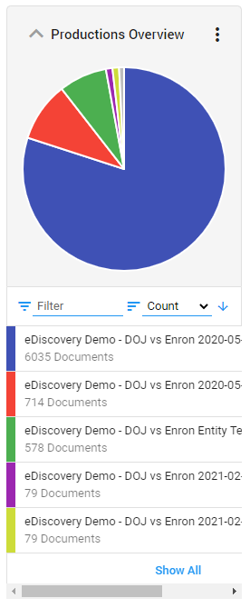

Yes! After adding the initial file or folder on the Upload screen select Add Files or Add Folders in the upper right corner.
Select each File Group individually to set Custodian and Source.
Yes! After adding the initial file or folder on the Upload screen select Add Files or Add Folders in the upper right corner.
Select each File Group individually to set Custodian and Source.
To find emails that are only between two people use the emailparticipant field and the One-to-One emailclassification field.
For example: emailparticipant=*dodd* AND emailparticipant=*schneider* AND emailclassification= One-to-One
Watch the Finding Emails between two People video.
Use the following Regular Expression query to find the xxx-xx-xxxx pattern commonly used to represent a U.S. Social Security Number: [0-9]{3]-[0-9]{2}-[0-9]{4}
To find documents containing redactions, use the field “contains redaction” or look for a facet called “Contains Redaction”.
When viewing a document the  icon next to the document name
notifies the user when hidden content is detected. Hover above this icon to see which hidden
content types are detected. If detection of hidden content failed, a red icon
icon next to the document name
notifies the user when hidden content is detected. Hover above this icon to see which hidden
content types are detected. If detection of hidden content failed, a red icon  is shown.
Note, the content can only be reviewed by downloading the document in its native format.
is shown.
Note, the content can only be reviewed by downloading the document in its native format.
Learn more here: Hidden Content
Yes! Use the query p/n to search for preceding terms. For example:
cat p/3 dog would find cat where it precedes the term dog by at least 3 terms.
Learn more here: Precedes Operator.
The easiest way to view documents that have been produced
is by viewing the Productions Overview Facet and selecting the production set.

Once a document has been produced you can view it from the document image Production View tab.
Learn more here: Productions
Yes! While viewing a document, you can tag families, conversation and duplicates using the scope settings.
Learn more here: Tagging
Yes! You can bulk redaction information by creating an Auto-Redaction Rule.
Learn how here:
Auto Redactions
Using ZyLAB ONE’s Custom Views and the Reports feature from the List View you can easily create custom reports such as a Privileged Log.
Watch the Creating a Privilege Log video.
A Timeline Feature is accessible from the Matter Overview dashboard. Using the Timeline you can filter by various dates, including: Created, Modified, Email Sent and Email Delivery dates.
Yes! You can change the Reviewed Status in any matter by selecting Review Status from the Configuration Menu.
Learn more here: Review Status
If you have the appropriate role you can use the Batch Field update feature to update metadata and other fields. This feature is used in connection with Batch Search.
Learn more here: Batch Search
Create Review Batches in the Document List via the Settings icon. Once created they can be assigned to specific reviewers.
Learn how here: Review Batches
Yes! You can download a set of documents as pdfs using the Batch Download feature from the Document List view.
Learn how here: Batch Downloads
Yes! To bulk- un-tag documents, filter for the documents to be untagged, select Bulk Tag from the document list menu, then select Untag and select the tag to be removed.
See how here: Bulk Tagging
Yes! If you have the appropriate role permission you can create custom tags for a matter from the Configuration menu.
Learn how here: Tags
There are several ways to share a document with another user. (1) Open the document in the document viewer, copy the link in the browser bar then send it to the user via email, (2) share the document ID with the user, or (3) use the Further Review tag.
No, since the file cannot be opened it will not be processed.
Yes! Document level access can be set using the Document Security feature.
Learn more here: Document Security